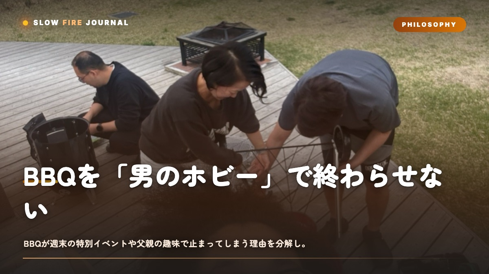

BBQを「男のホビー」で終わらせない — 家族の日常食にする5つの条件
BBQって、なんだかんだで「お父さんのイベント」で終わってませんか。準備に3時間、片付けに1時間、しかも肉は外だけ黒くて中はパサパサ——これだと家族はだんだん付き合ってくれなくなるんですよね。この記事の結論はシンプルで、BBQを日常にする条件は「3〜4時間で完結・熱々を出す・多品種・スーパーの食材・蓋付きグリル」の5つです。ひとつずつ、数字と段取りで解きほぐしていきます。

結論：BBQが日常になる条件は「5つ」に集約される
いきなり結論からいきますね。BBQが「男のホビー」から「家族の日常食」に変わるかどうかは、次の5条件を満たせるかにかかっています。
- 5〜6時間で全部完結する（準備・調理・食事・片付け込み）
- 熱々を出来立てで出す（冷めた塊肉＋ソースにしない）
- 多品種でまわす（肉2〜3種＋副菜＋シーフード）
- 普通のスーパーで買える食材で成立させる（コストコ頼みにしない）
- 蓋付きグリルのロジックを使う（焦がさず、水分を保つ）
この5つが揃うと、BBQは「年に数回の一大イベント」から「今週末やろうか、くらいのカジュアルなごはん」に変わります。逆に言うと、どれか一つでも欠けると、家族の誰かに我慢がのしかかって続かなくなるんですよね。僕自身、最初の数年は12時間ブリスケットに憧れて休日を丸ごと溶かしていたんですが、家族はだんだん冷めていきました。理由は後で詳しく話します。
なぜ「趣味」で止まってしまうのか — 3つの構造的な壁
そもそもなぜ、BBQは日常になりにくいのか。ここを理解しないと対策も的外れになります。原因は大きく3つです。
壁1：時間の非対称性
本場アメリカンBBQの花形であるブリスケット（牛胸肉）は、110℃で12〜14時間かかります。プルドポーク（豚肩肉）でも120〜125℃で8〜10時間。これは「作る人だけが一日拘束される」構造なんです。家族は完成を待つだけ、作り手は火の番で会話に入れない。趣味としては最高でも、日常の食としては無理があります。
壁2：温度差という物理
塊肉は完成した瞬間がピークで、10分も置けば表面から熱が逃げます。しかもプルドポークやブリスケットは切ってから配る前提なので、食卓に届くころには芯温が50℃前後まで落ちていることも珍しくありません。冷めて乾いた肉にBBQソースをかけて誤魔化す——これ、A5和牛を焼いて市販のタレでベチャベチャにするのと同じもったいなさなんですよね。
壁3：単調さ
塊肉一点勝負は、途中がヒマで、最後に大量の同じ肉が出ます。子どもは飽きるし、野菜好きの家族は手持ち無沙汰。日本人の食の本質は「少しずつ、いろいろなものを、常に熱々で」なので、塊肉一択は文化的に相性が悪いんです。
条件を数値に落とす — 5〜6時間タイムラインの実際
じゃあ具体的にどう組むか。ここからは再現できる数字で話します。まず全体の時間配分です。
| フェーズ | 所要時間 | やること |
|---|---|---|
| 前日仕込み | 20〜30分 | ラブを一括で振る・下味・野菜カット |
| 火起こし | 20〜25分 | チャコールスターターで炭を熾す |
| ツーゾーン構築 | 5分 | 炭を片側に寄せて直火/間接を作る |
| 調理・食事 | 3〜3.5時間 | 多品種を波状に焼いて熱々を出し続ける |
| 片付け | 30〜40分 | 網の余熱掃除・炭処理・撤収 |
合計でだいたい5時間ちょっと。ポイントは「一つの塊肉を待つ」のではなく「短〜中時間の料理を波状に投入する」設計にすることです。焼き時間の短いものから長いものへ、こんなイメージで組みます。
| 食材 | 庫内温度 | 時間 | 中心温度 |
|---|---|---|---|
| とうもろこし・野菜 | 200〜220℃ | 10〜15分 | — |
| ソーセージ | 160〜180℃(間接) | 15〜20分 | 72℃ |
| 鶏もも | 220→260℃で皮 | 20〜25分 | 75℃ |
| シダープランクサーモン | 200〜230℃ | 8〜12分 | 53℃ |
| 豚肩ロース厚切り | 200〜220℃ | 25〜40分 | 63℃ |
この構成なら、最初の20分で野菜とソーセージが上がって、まず一皿目が出せます。以降15〜20分刻みで次々に熱々が届くので、家族が待たされる時間がほぼゼロになるんです。これが「熱々を出来立てで」を物理的に成立させる仕組みです。
蓋付きグリルのロジックが全部を支える理由
ここが技術的な核心です。日本の従来BBQは「直火で焼いて炭火で焦がす」ので、外は真っ黒・中はカスカスになりがち。原因は、直火の放射熱（600℃超になることもあります）が表面を一気に炭化させる一方、内部まで熱が入る前に水分が飛んでしまうからなんですね。
蓋を閉めると、庫内が対流熱で満たされる「オーブン状態」になります。これによって食材の全面が均一に加熱され、表面温度が上がりすぎないので焦げにくく、水分も保たれます。ツーゾーンファイア（炭を片側に寄せる配置）と組み合わせれば、直火で香ばしさをつけ、間接で中まで火を通す、という使い分けが片手でできます。
ラブ（乾燥スパイス）をたっぷり付けたときこそ、この蓋付き＋間接が効きます。ラブには砂糖が入っているものが多く、直火に当てると170℃前後で焦げて苦くなるんです。だから振ったら間接ゾーンへ。Low n Slow Basics や Butcher's Axe のような配合の深いラブは、焦がさず低めの温度でじっくり温めると香りが立ってくるので、蓋付きロジックとの相性が抜群です。
よくある失敗と回避策
ここは僕が実際にやらかしたものも含めて、家族BBQで起きがちなつまずきをまとめます。
- 塊肉に固執して当日が回らない：初回から12時間ブリスケットに挑むと、家族が飽きて解散します。日常運用は上記の20〜40分メニュー中心にして、塊肉は「たまの憧れ」に格下げしましょう。
- グリルの温度計を信じてしまう：蓋の温度計は庫内上部の空気温で、実測と20〜30℃ずれることがあります。必ず食材にプローブ（差し込み式の温度計）を刺して中心温度で判断してください。
- 全品を同時に焼こうとする：網が満杯だと温度が下がり、全部が生焼け方向に崩れます。網面積の7割までに抑え、波状投入で回すのが正解です。
- 子ども用を後回しにする：子どもは待てません。とうもろこしやソーセージなど10〜20分で上がるものを最初に用意して、開始15分で一皿目を出すと場が保ちます。
- 片付けを想定しない：網は火が消える前、まだ150℃くらいの余熱があるうちにブラシでこすると焦げが落ちやすいです。冷え切ってからだと倍の時間がかかります。
トラブルシュート早見表
| 症状 | 原因 | 対処 |
|---|---|---|
| 肉の外が黒く中が生 | 直火の高温放射 | 間接ゾーンへ移し蓋を閉める。庫内180〜200℃を維持 |
| ラブが苦い | 砂糖が直火で焦げた | ラブを付けた食材は間接ゾーンのみで加熱 |
| 肉が全体的にパサつく | 中心温度の入れすぎ | 目標温度の5℃手前で引き上げ、5〜10分休ませる |
| 途中で火力が落ちる | 炭の追加不足・灰づまり | 1〜1.5時間ごとに炭を継ぎ足し、灰を落として通気確保 |
| 料理の提供が途切れる | 波状投入の設計不足 | 短時間メニューと中時間メニューを交互に配置し直す |
バリエーション：日常に馴染ませる3パターン
最後に、ライフスタイル別の組み立て例です。どれも普通のスーパーで揃う食材で作れます。
平日夜の30分バージョン
火起こし20分＋ソーセージ・鶏もも・野菜で30分。蓋付きグリルなら平日でも十分現実的です。翌日に響かせないのがコツ。
週末の3時間バージョン
肉3種（鶏もも・豚肩ロース・サーモン）＋副菜2品＋とうもろこし。波状投入で熱々を出し続け、大人はビール、子どもは焼きマシュマロで締める。これが「3〜4時間で完結」の王道です。
憧れとしての塊肉バージョン
年に数回、時間が取れる日にプルドポーク（120〜125℃・中心97℃・8〜10時間）に挑む。ただしこれは「日常の食」ではなく「趣味の日」と割り切ると、家族との温度差が生まれません。
本場アメリカンBBQのロジック——蓋付き・間接熱・温度の科学——は本当に優秀で、僕もそこから多くを学びました。ただ12時間級の儀式は、日本の暮らしには少し重い。だからこそ、その良さを引き継ぎつつ3〜4時間で完結させる与論島発のやり方（YORON BBQ）が、家族の食卓には馴染みやすいんです。まずは今週末、蓋付きグリルで多品種の波状投入から試してみてください。きっと「また来週もやろう」と家族が言い出しますよ。
よくある質問
蓋付きグリルがなくても家族BBQは成立しますか？
通常のグリルでも、炭を片側に寄せてツーゾーンファイアを作れば間接ゾーンは作れます。ただしアルミホイルや蓋代わりのボウルで庫内を覆えると、対流熱で焦げにくくなり水分も保てるので、火入れの安定感が段違いです。予算が許すなら蓋付きが一番のショートカットになります。
子どもがいる場合、開始何分で最初の料理を出せばいいですか？
開始15分以内が理想です。とうもろこし（200〜220℃で10〜15分）やソーセージ（間接160〜180℃で15〜20分・中心72℃）は火起こし直後に投入できるので、まずこれで一皿目を出すと場が保ちます。子どもは待てないので、時間の短いメニューを先頭に置くのがコツです。
塊肉のロー&スローは家族BBQには向かないということですか？
完全にダメではなく「日常向きではない」という位置づけです。12時間級は作り手が一日拘束され、完成時に冷めやすく、単調になりがちなので、家族の食卓には5〜6時間完結の多品種スタイルのほうが向きます。塊肉は年に数回の“趣味の日”として楽しむと、家族との温度差が生まれず長続きします。